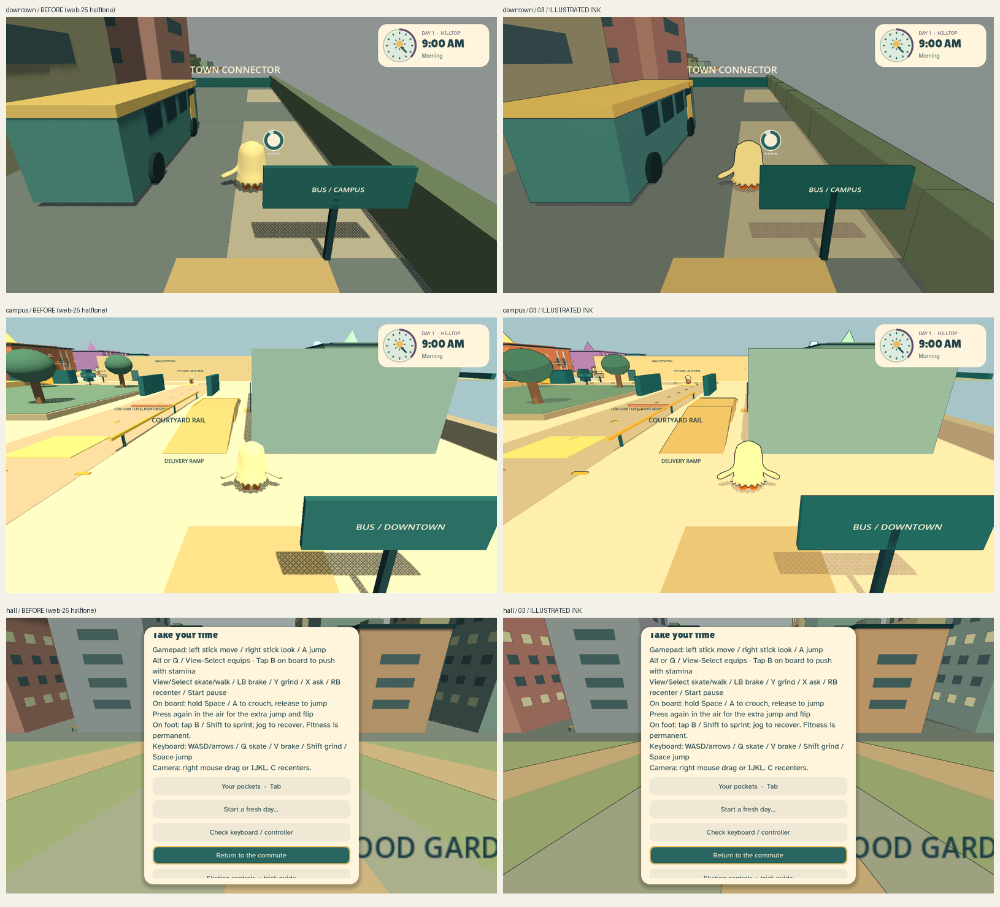
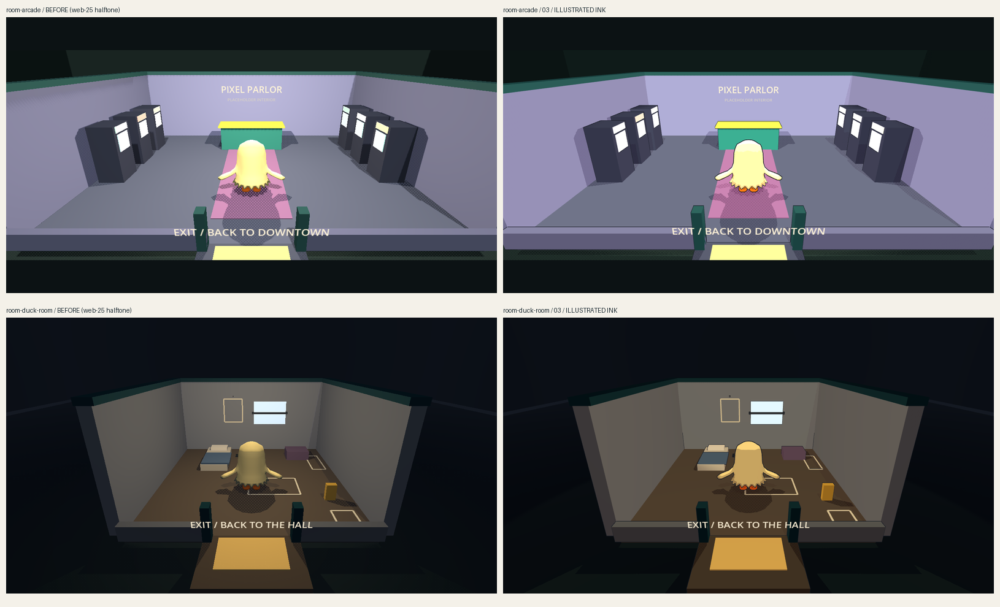

Mr. Duck: Illustrated Ink preview
Preview build web-26 (2026-10-28). Treatment 03 across the whole game: clean ink contours, a warm two-tone shade, fine hatching, and the halftone dots kept in cast shadows. This is now the main release; the same build sits at its preview path too.
Play the ink preview Same build, web-25 look Back to the main pageIn game, press F10 to flip between the two looks.

